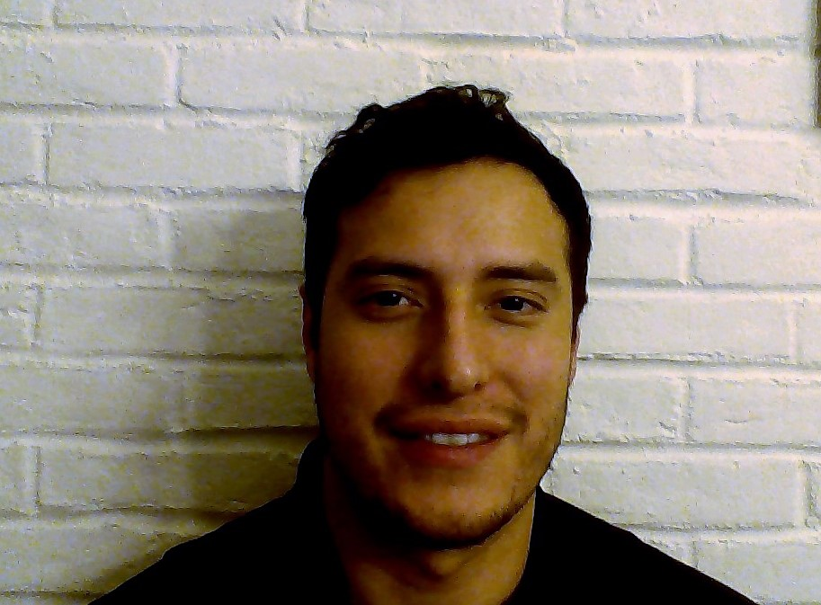

About Me
Born in Dallas,TX but raised in Denton, tx. Parents where both born and raised in Mexico, making both me and my sister first generation citizens. I gradutated from Krum highschool in 2009.
I continued my education by attending The University of North Texas. I graduated in 2015 with two Bachelors in Buisness. I spent 2 years in Digital Marketing, and currently work in the Logistics and shipping field.
Big movie fan and even bigger music lover. Spend most of my free time outside either playing sports, having a drink, or watching a movie. Random fact: Favorite animal is a Kangaroo.